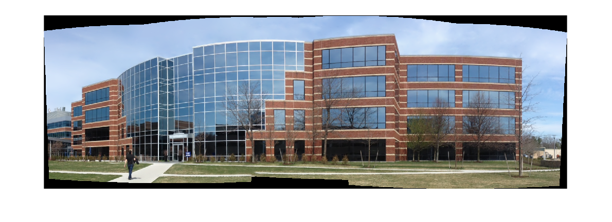

Rotation model images stitcher
A detailed example on image stitching.
Sources:
See also: https://www.mathworks.com/help/vision/examples/feature-based-panoramic-image-stitching.html
Contents
Description of parameters:
- preview (true|false) Run stitching in the preview mode. Works faster than usual mode, but output image will have lower resolution.
- try_cuda (true|false) Try to use CUDA. The default value is false. All default values are for CPU mode.
- work_megapix (float) Resolution for image registration step. The default is 0.6 Mpx.
- features_type (SurfFeaturesFinder|OrbFeaturesFinder|AKAZEFeaturesFinder) Type of features used for images matching. The default is SURF.
- matcher_type (homography|affine) Matcher used for pairwise image matching. The default is homography.
- estimator_type (HomographyBasedEstimator|AffineBasedEstimator) Type of estimator used for transformation estimation. The default is homography.
- match_conf (float) Confidence for feature matching step. The default is 0.65 for SURF and 0.3 for ORB.
- conf_thresh (float) Threshold for two images are from the same panorama confidence. The default is 1.0.
- ba_cost_func (NoBundleAdjuster|BundleAdjusterReproj|BundleAdjusterRay|BundleAdjusterAffinePartial) Bundle adjustment cost function. The default is Ray.
- ba_refine_mask (mask) Set refinement mask for bundle adjustment. It looks like 'x_xxx', where 'x' means refine respective parameter and '_' means don't refine one, and has the following format: {fx, skew, ppx, aspect, ppy}. The default mask is 'xxxxx'. If bundle adjustment doesn't support estimation of selected parameter then the respective flag is ignored.
- do_wave_correct (true|false) Default true
- wave_correct (Horiz|Vert) Perform wave effect correction. The default is 'Horiz'.
- save_graph (true|false) Save matches graph represented in DOT language and print it. Labels description: Nm is number of matches, Ni is number of inliers, C is confidence.
- warp_type (affine|plane|cylindrical|spherical|fisheye|stereographic| compressedPlaneA2B1|compressedPlaneA1.5B1|compressedPlanePortraitA2B1| compressedPlanePortraitA1.5B1|paniniA2B1|paniniA1.5B1|paniniPortraitA2B1| paniniPortraitA1.5B1|mercator|transverseMercator) Warp surface type. The default is 'spherical'.
- seam_megapix (float) Resolution for seam estimation step. The default is 0.1 Mpx.
- seam_find_type (no|voronoi|gc_color|gc_colorgrad|dp_color|dp_colorgrad) Seam estimation method. The default is 'gc_color'.
- compose_megapix (float) Resolution for compositing step. Use -1 for original resolution. The default is -1.
- expos_comp_type (NoExposureCompensator|GainCompensator|BlocksGainCompensator) Exposure compensation method. The default is 'BlocksGainCompensator'.
- blend_type (NoBlender|FeatherBlender|MultiBandBlender) Blending method. The default is 'MultiBandBlender'.
- blend_strength (float) Blending strength from [0,100] range. The default is 5.
- output (filename) The default is 'stitching_result.jpg'.
- timelapse (true|false) Default false
- timelapse_type (AsIs|Crop) Output warped images separately as frames of a time lapse movie, with 'fixed_' prepended to input file names
- timelapse_range (float) Range width to limit number of images to match with, default 5
Images
if mexopencv.require('vision') fpath = fullfile(toolboxdir('vision'), 'visiondata', 'building'); imgset = imageSet(fpath); img_names = imgset.ImageLocation; elseif true img_names = { fullfile(mexopencv.root(), 'test', 'a1.jpg') fullfile(mexopencv.root(), 'test', 'a2.jpg') fullfile(mexopencv.root(), 'test', 'a3.jpg') }; else img_names = { fullfile(mexopencv.root(), 'test', 'b1.jpg') fullfile(mexopencv.root(), 'test', 'b2.jpg') }; end % Check if have enough images num_images = numel(img_names); assert(num_images >= 2, 'Need more images'); % read images and store their full sizes images = cell(num_images,1); full_img_sizes = cell(num_images,1); for i=1:num_images images{i} = imread(img_names{i}); sz = size(images{i}); full_img_sizes{i} = sz([2 1]); end % display images if ~mexopencv.isOctave() && mexopencv.require('images') montage(img_names); end
Warning: Image is too big to fit on screen; displaying at 33%
Parameters
p = struct(); % flags p.preview = false; p.try_cuda = false; % Motion Estimation Flags p.work_megapix = 0.6; if true % requires opencv_contrib p.features_type = 'SurfFeaturesFinder'; elseif true p.features_type = 'AKAZEFeaturesFinder'; else p.features_type = 'OrbFeaturesFinder'; end p.matcher_type = 'homography'; p.estimator_type = 'HomographyBasedEstimator'; p.match_conf = 0.3; p.conf_thresh = 1.0; p.ba_cost_func = 'BundleAdjusterRay'; p.ba_refine_mask = 'xxxxx'; p.do_wave_correct = true; p.wave_correct = 'Horiz'; p.save_graph = false; % Compositing Flags p.warp_type = 'spherical'; p.seam_megapix = 0.1; p.seam_find_type = 'gc_color'; p.compose_megapix = -1; p.expos_comp_type = 'BlocksGainCompensator'; p.blend_type = 'MultiBandBlender'; p.blend_strength = 5.0; p.output = fullfile(tempdir(), 'stitching_result.jpg'); p.timelapse = false; p.timelapse_type = 'AsIs'; p.timelapse_range = 5; p.work_scale = 1.0; % see p.work_megapix p.seam_scale = 1.0; % see p.seam_megapix p.compose_scale = 1.0; % see p.compose_megapix p.is_work_scale_set = false; p.is_seam_scale_set = false; p.is_compose_scale_set = false; p.seam_work_aspect = 1.0; %p.compose_seam_aspect = 1.0; p.compose_work_aspect = 1.0;
Computed parameters
sz_area = median(cellfun(@prod, full_img_sizes)); %HACK if p.preview p.compose_megapix = 0.6; end if ~p.is_work_scale_set if p.work_megapix > 0 p.work_scale = min(1.0, sqrt(p.work_megapix * 1e6 / sz_area)); end p.is_work_scale_set = true; end if ~p.is_seam_scale_set if p.seam_megapix > 0 p.seam_scale = min(1.0, sqrt(p.seam_megapix * 1e6 / sz_area)); end p.is_seam_scale_set = true; p.seam_work_aspect = p.seam_scale / p.work_scale; end if ~p.is_compose_scale_set if p.compose_megapix > 0 p.compose_scale = min(1.0, sqrt(p.compose_megapix * 1e6 / sz_area)); end p.is_compose_scale_set = true; % Compute relative scales %p.compose_seam_aspect = p.compose_scale / p.seam_scale; p.compose_work_aspect = p.compose_scale / p.work_scale; end display(p)
p =
struct with fields:
preview: 0
try_cuda: 0
work_megapix: 0.6000
features_type: 'SurfFeaturesFinder'
matcher_type: 'homography'
estimator_type: 'HomographyBasedEstimator'
match_conf: 0.3000
conf_thresh: 1
ba_cost_func: 'BundleAdjusterRay'
ba_refine_mask: 'xxxxx'
do_wave_correct: 1
wave_correct: 'Horiz'
save_graph: 0
warp_type: 'spherical'
seam_megapix: 0.1000
seam_find_type: 'gc_color'
compose_megapix: -1
expos_comp_type: 'BlocksGainCompensator'
blend_type: 'MultiBandBlender'
blend_strength: 5
output: 'C:\Users\Amro\AppData\Local\Temp\stitching_result.jpg'
timelapse: 0
timelapse_type: 'AsIs'
timelapse_range: 5
work_scale: 1
seam_scale: 0.5705
compose_scale: 1
is_work_scale_set: 1
is_seam_scale_set: 1
is_compose_scale_set: 1
seam_work_aspect: 0.5705
compose_work_aspect: 1
Features finding
fprintf('Finding features...\n'); tic if strcmp(p.features_type, 'SurfFeaturesFinder') && p.try_cuda p.features_type = 'SurfFeaturesFinderGpu'; end finder = cv.FeaturesFinder(p.features_type); features = cell(num_images,1); for i=1:num_images % scale for image registration if p.work_megapix < 0 img = images{i}; else img = cv.resize(images{i}, p.work_scale, p.work_scale); end % find features features{i} = finder.find(img); features{i}.img_idx = (i-1); fprintf('Features in image #%d: %d\n', i, numel(features{i}.keypoints)); % resize stored image images{i} = cv.resize(images{i}, p.seam_scale, p.seam_scale); end finder.collectGarbage(); fprintf('Finding features, time: '); toc
Finding features... Features in image #1: 3072 Features in image #2: 3072 Features in image #3: 3072 Features in image #4: 3072 Features in image #5: 3051 Finding features, time: Elapsed time is 0.833158 seconds.
Features matching
fprintf('Pairwise matching...\n'); tic args = {'TryUseGPU',p.try_cuda, 'MatchConf',p.match_conf}; if strcmp(p.matcher_type, 'affine') args = ['AffineBestOf2NearestMatcher', args, 'FullAffine',false]; elseif p.timelapse_range < 0 args = ['BestOf2NearestMatcher', args]; else args = ['BestOf2NearestRangeMatcher', args, 'RangeWidth',p.timelapse_range]; end matcher = cv.FeaturesMatcher(args{:}); pairwise_matches = matcher.match_pairwise(features); matcher.collectGarbage(); fprintf('Pairwise matching, time: '); toc % Check if we should save matches graph if p.save_graph fprintf('Saving matches graph...\n'); str = cv.FeaturesMatcher.matchesGraphAsString(pairwise_matches, p.conf_thresh); disp(str) end % Leave only images we are sure are from the same panorama indices = cv.FeaturesMatcher.leaveBiggestComponent(... features, pairwise_matches, p.conf_thresh); indices = indices + 1; % 0-based vs 1-based indexing img_names = img_names(indices); images = images(indices); full_img_sizes = full_img_sizes(indices); % Check if we still have enough images num_images = numel(img_names); assert(num_images >= 2, 'Need more images');
Pairwise matching... Pairwise matching, time: Elapsed time is 1.848271 seconds.
Homography estimation
fprintf('Homography estimation...\n'); tic estimator = cv.Estimator(p.estimator_type); [cameras,success] = estimator.estimate(features, pairwise_matches); assert(success, 'Homography estimation failed'); for i=1:numel(cameras) % some subsequent functions require CV_32F matrices cameras(i).R = single(cameras(i).R); cameras(i).K = single(cameras(i).K); end fprintf('Homography estimation, time: '); toc for i=1:num_images fprintf('Initial camera intrinsics #%d:\n', indices(i)) disp('K='), disp(cameras(i).K) disp('R='), disp(cameras(i).R) end
Homography estimation...
Homography estimation, time: Elapsed time is 0.106083 seconds.
Initial camera intrinsics #1:
K=
708.6216 0 320.0000
0 708.6216 240.0000
0 0 1.0000
R=
0.9449 -0.0841 -0.5043
0.0962 1.0495 0.0069
0.3897 -0.0508 0.9605
Initial camera intrinsics #2:
K=
708.6216 0 320.0000
0 708.6216 240.0000
0 0 1.0000
R=
0.9978 -0.0161 -0.1366
0.0182 1.0077 -0.0038
0.1073 0.0011 1.0000
Initial camera intrinsics #3:
K=
708.6216 0 320.0000
0 708.6216 240.0000
0 0 1.0000
R=
1 0 0
0 1 0
0 0 1
Initial camera intrinsics #4:
K=
708.6216 0 320.0000
0 708.6216 240.0000
0 0 1.0000
R=
0.9471 0.0320 0.3221
-0.0148 0.9808 0.0015
-0.2617 0.0049 0.9111
Initial camera intrinsics #5:
K=
708.6216 0 320.0000
0 708.6216 240.0000
0 0 1.0000
R=
0.7507 0.0565 0.6267
-0.0645 0.9318 0.0149
-0.4897 -0.0444 0.7121
Camera parameters adjusting
adjuster = cv.BundleAdjuster(p.ba_cost_func); refine_mask = zeros(3,3,'uint8'); assert(numel(p.ba_refine_mask) == 5, 'Incorrect refinement mask length'); if (p.ba_refine_mask(1) == 'x'), refine_mask(1,1) = 1; end if (p.ba_refine_mask(2) == 'x'), refine_mask(1,2) = 1; end if (p.ba_refine_mask(3) == 'x'), refine_mask(1,3) = 1; end if (p.ba_refine_mask(4) == 'x'), refine_mask(2,2) = 1; end if (p.ba_refine_mask(5) == 'x'), refine_mask(2,3) = 1; end adjuster.RefinementMask = refine_mask; adjuster.ConfThresh = p.conf_thresh; [cameras,success] = adjuster.refine(features, pairwise_matches, cameras); assert(success, 'Camera parameters adjusting failed'); for i=1:numel(cameras) % some subsequent functions require CV_32F matrices cameras(i).R = single(cameras(i).R); cameras(i).K = single(cameras(i).K); end for i=1:num_images fprintf('Camera #%d:\n', indices(i)) disp('K='), disp(cameras(i).K) disp('R='), disp(cameras(i).R) end % Wave correction if p.do_wave_correct rmats = {cameras(indices).R}; rmats = cv.BundleAdjuster.waveCorrect(rmats, 'Kind',p.wave_correct); for i=1:numel(rmats) cameras(i).R = rmats{i}; end clear rmats end
Camera #1:
K=
815.6824 0 320.0000
0 815.6824 240.0000
0 0 1.0000
R=
0.9048 -0.0790 -0.4184
0.0899 0.9959 0.0063
0.4162 -0.0433 0.9082
Camera #2:
K=
810.9682 0 320.0000
0 810.9682 240.0000
0 0 1.0000
R=
0.9928 -0.0173 -0.1187
0.0171 0.9998 -0.0031
0.1188 0.0011 0.9929
Camera #3:
K=
809.7206 0 320.0000
0 809.7206 240.0000
0 0 1.0000
R=
1.0000 0.0000 0
0.0000 1.0000 0
0 0 1.0000
Camera #4:
K=
785.8380 0 320.0000
0 785.8380 240.0000
0 0 1.0000
R=
0.9555 0.0253 0.2940
-0.0263 0.9997 -0.0006
-0.2939 -0.0072 0.9558
Camera #5:
K=
779.1625 0 320.0000
0 779.1625 240.0000
0 0 1.0000
R=
0.7932 0.0585 0.6061
-0.0802 0.9967 0.0088
-0.6036 -0.0555 0.7953
Warping images
fprintf('Warping images (auxiliary)...\n'); tic % Find median focal length p.warped_image_scale = median([cameras(indices).focal]); % create warper warper_args = {p.warped_image_scale * p.seam_work_aspect}; switch p.warp_type case 'plane' if p.try_cuda warper_args = ['PlaneWarperGpu', warper_args]; else warper_args = ['PlaneWarper', warper_args]; end case 'cylindrical' if p.try_cuda warper_args = ['CylindricalWarperGpu', warper_args]; else warper_args = ['CylindricalWarper', warper_args]; end case 'spherical' if p.try_cuda warper_args = ['SphericalWarperGpu', warper_args]; else warper_args = ['SphericalWarper', warper_args]; end case 'affine' warper_args = ['AffineWarper', warper_args]; case 'fisheye' warper_args = ['FisheyeWarper', warper_args]; case 'stereographic' warper_args = ['StereographicWarper', warper_args]; case 'compressedPlaneA2B1' warper_args = ['CompressedRectilinearWarper', warper_args, 'A',2.0, 'B',1.0]; case 'compressedPlaneA1.5B1' warper_args = ['CompressedRectilinearWarper', warper_args, 'A',1.5, 'B',1.0]; case 'compressedPlanePortraitA2B1' warper_args = ['CompressedRectilinearPortraitWarper', warper_args, 'A',2.0, 'B',1.0]; case 'compressedPlanePortraitA1.5B1' warper_args = ['CompressedRectilinearPortraitWarper', warper_args, 'A',1.5, 'B',1.0]; case 'paniniA2B1' warper_args = ['PaniniWarper', warper_args, 'A',2.0, 'B',1.0]; case 'paniniA1.5B1' warper_args = ['PaniniWarper', warper_args, 'A',1.5, 'B',1.0]; case 'paniniPortraitA2B1' warper_args = ['PaniniPortraitWarper', warper_args, 'A',2.0, 'B',1.0]; case 'paniniPortraitA1.5B1' warper_args = ['PaniniPortraitWarper', warper_args, 'A',1.5, 'B',1.0]; case 'mercator' warper_args = ['MercatorWarper', warper_args]; case 'transverseMercator' warper_args = ['TransverseMercatorWarper', warper_args]; otherwise error('Cant create warper'); end warper = cv.RotationWarper(warper_args{:}); % Preapre images masks masks = cell(num_images,1); for i=1:num_images sz = size(images{i}); masks{i} = 255 * ones(sz(1:2), 'uint8'); end % Warp images and their masks corners = cell(num_images,1); sizes = cell(num_images,1); for i=1:num_images K = cameras(i).K; K(1,1) = K(1,1) * p.seam_work_aspect; K(1,3) = K(1,3) * p.seam_work_aspect; K(2,2) = K(2,2) * p.seam_work_aspect; K(2,3) = K(2,3) * p.seam_work_aspect; [images{i}, corners{i}] = warper.warp(images{i}, K, cameras(i).R, ... 'InterpMode','Linear', 'BorderMode','Reflect'); sz = size(images{i}); sizes{i} = sz([2 1]); masks{i} = warper.warp(masks{i}, K, cameras(i).R, ... 'InterpMode','Nearest', 'BorderMode','Constant'); end fprintf('Warping images, time: '); toc
Warping images (auxiliary)... Warping images, time: Elapsed time is 0.228768 seconds.
Exposure compensation
compensator = cv.ExposureCompensator(p.expos_comp_type); compensator.feed(corners, images, masks);
Seam finding
fprintf('Seam finding...\n'); tic switch p.seam_find_type case 'no' args = {'NoSeamFinder'}; case 'voronoi' args = {'VoronoiSeamFinder'}; case 'dp_color' args = {'DpSeamFinder', 'CostFunction','Color'}; case 'dp_colorgrad' args = {'DpSeamFinder', 'CostFunction','ColorGrad'}; case 'gc_color' if p.try_cuda args = {'GraphCutSeamFinderGpu', 'CostType','Color'}; else args = {'GraphCutSeamFinder', 'CostType','Color'}; end case 'gc_colorgrad' if p.try_cuda args = {'GraphCutSeamFinderGpu', 'CostType','ColorGrad'}; else args = {'GraphCutSeamFinder', 'CostType','ColorGrad'}; end otherwise error('Cant create seam finder'); end seam_finder = cv.SeamFinder(args{:}); images = cellfun(@single, images, 'UniformOutput',false); masks = seam_finder.find(images, corners, masks); fprintf('Seam finding, time: '); toc
Seam finding... Seam finding, time: Elapsed time is 0.551643 seconds.
Compositing images
fprintf('Compositing...\n'); tic % Update warped image scale, then update corners and sizes p.warped_image_scale = p.warped_image_scale * p.compose_work_aspect; warper_args{2} = p.warped_image_scale; warper = cv.RotationWarper(warper_args{:}); for i=1:num_images % Update intrinsics cameras(i).focal = cameras(i).focal * p.compose_work_aspect; cameras(i).ppx = cameras(i).ppx * p.compose_work_aspect; cameras(i).ppy = cameras(i).ppy * p.compose_work_aspect; % Update corner and size sz = full_img_sizes{i}; if abs(p.compose_scale - 1) > 1e-1 sz = round(sz .* p.compose_scale); end roi = warper.warpRoi(sz, cameras(i).K, cameras(i).R); corners{i} = roi(1:2); sizes{i} = roi(3:4); end % create blender roi = cv.Blender.resultRoi(corners, sizes); p.blend_width = sqrt(prod(roi(3:4))) * p.blend_strength / 100.0; if strcmp(p.blend_type, 'NoBlender') || p.blend_width < 1.0 args = {'NoBlender'}; elseif strcmp(p.blend_type, 'MultiBandBlender') p.numbands = ceil(log(p.blend_width)/log(2)) - 1; fprintf('Multi-band blender, number of bands: %d\n', p.numbands); args = {'MultiBandBlender', 'TryGPU',p.try_cuda, 'NumBands',p.numbands}; elseif strcmp(p.blend_type, 'FeatherBlender') p.sharpness = 1.0 / p.blend_width; fprintf('Feather blender, sharpness: %f\n', p.sharpness); args = {'FeatherBlender', 'Sharpness',p.sharpness}; end blender = cv.Blender(args{:}); blender.prepare(corners, sizes); % create timelapser if p.timelapse timelapser = cv.Timelapser(p.timelapse_type); timelapser.initialize(corners, sizes); end for i=1:num_images fprintf('Compositing image #%d\n', indices(i)); % Read image and resize it if necessary img = imread(img_names{i}); sz = size(img); mask = 255 * ones(sz(1:2), 'uint8'); if abs(p.compose_scale - 1) > 1e-1 img = cv.resize(img, p.compose_scale, p.compose_scale); end % Warp the current image img = warper.warp(img, cameras(i).K, cameras(i).R, ... 'InterpMode','Linear', 'BorderMode','Reflect'); % Warp the current image mask mask = warper.warp(mask, cameras(i).K, cameras(i).R, ... 'InterpMode','Nearest', 'BorderMode','Constant'); % Compensate exposure img = compensator.apply(i-1, corners{i}, img, mask); sz = size(mask); seam_mask = cv.resize(cv.dilate(masks{i}), sz([2 1]), ... 'Interpolation','Nearest'); mask = bitand(mask, seam_mask); % Blend the current image img = int16(img); blender.feed(img, mask, corners{i}); if p.timelapse sz = size(img); mask = 255 * ones(sz(1:2), 'uint8'); timelapser.process(img, mask, corners{i}); dst = timelapser.getDst(); dst = uint8(dst); % TODO [~,fname,fext] = fileparts(img_names{i}); cv.imwrite(['fixed_' fname fext], dst); end end % final panorama [dst, dst_mask] = blender.blend(); dst = uint8(dst); % TODO cv.imwrite(p.output, dst); imshow(dst) % Release unused memory clear images masks img mask %clear sz i args K num_images refine_mask roi seam_mask success fprintf('Compositing, time: '); toc
Compositing... Multi-band blender, number of bands: 5 Compositing image #1 Compositing image #2 Compositing image #3 Compositing image #4 Compositing image #5 Warning: Image is too big to fit on screen; displaying at 67% Compositing, time: Elapsed time is 1.288794 seconds.